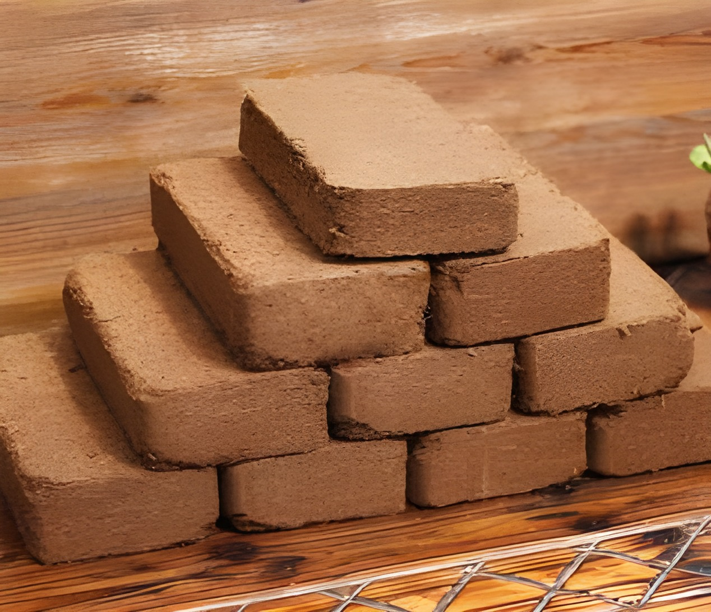
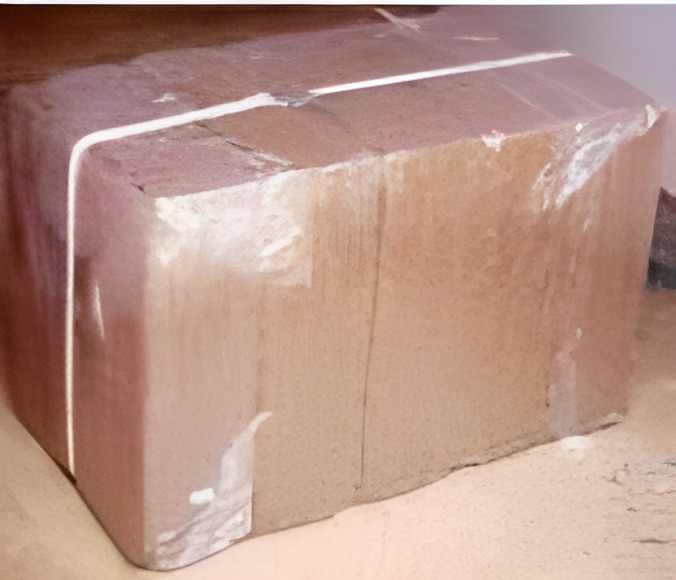
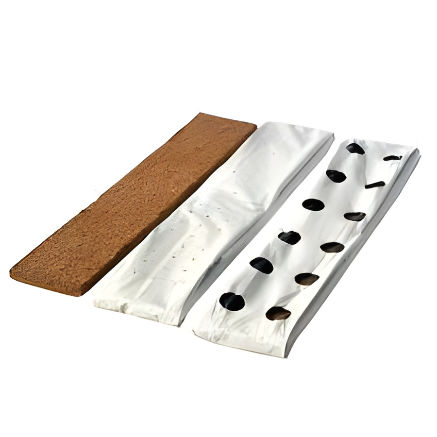
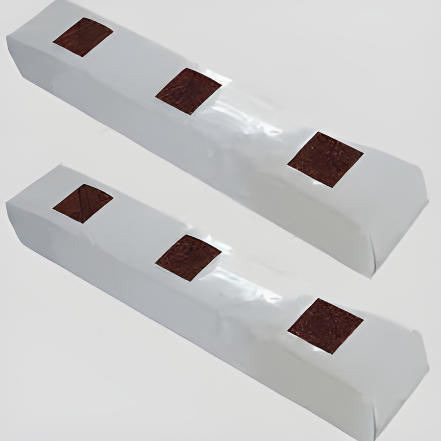
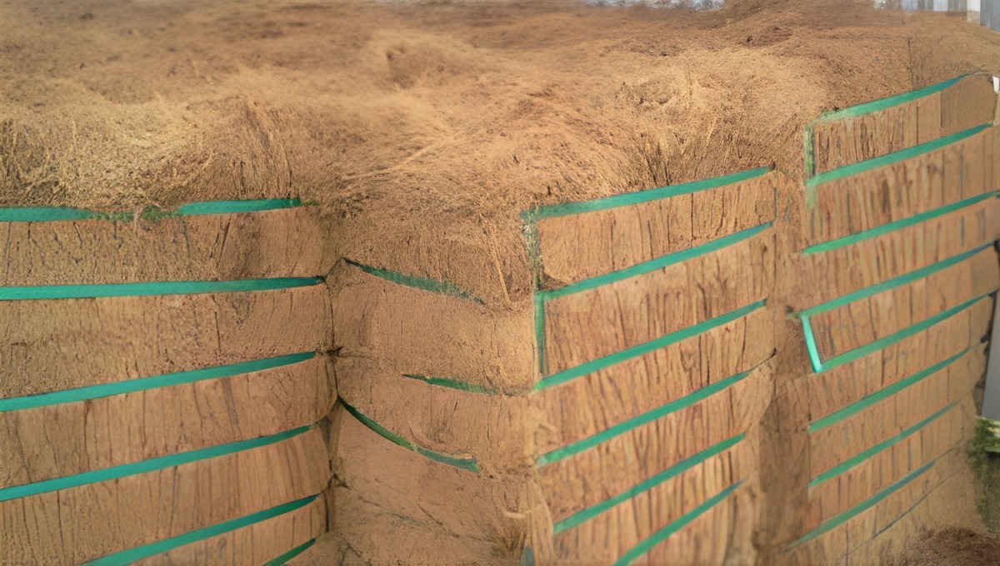
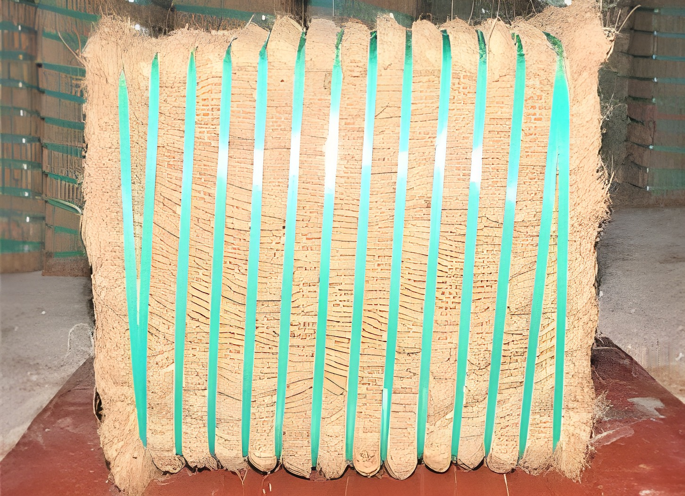
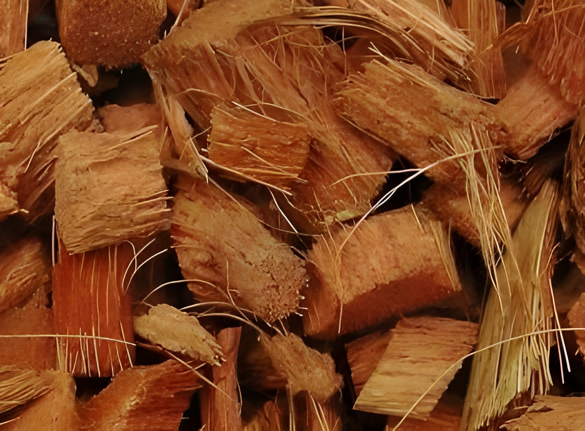
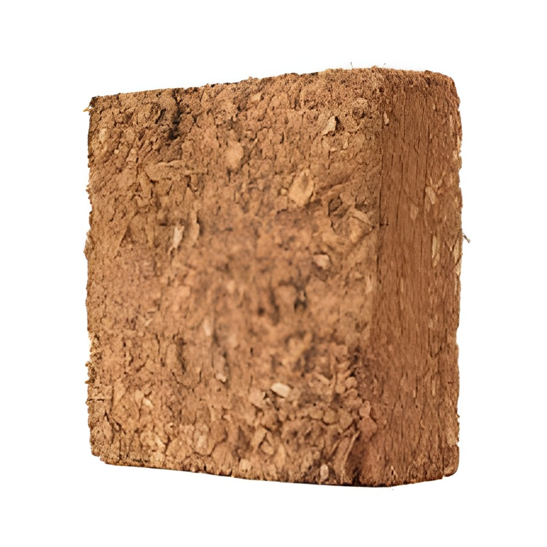
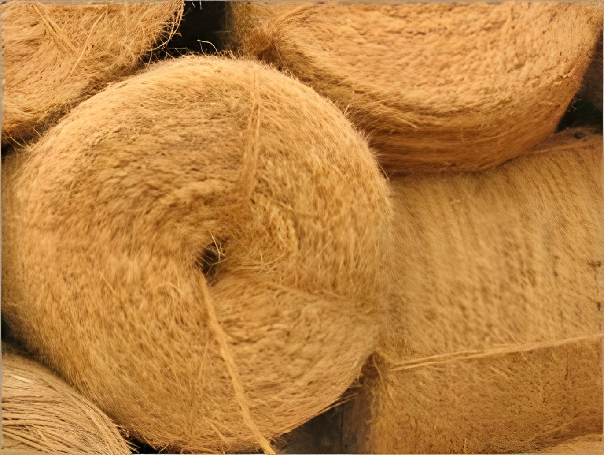
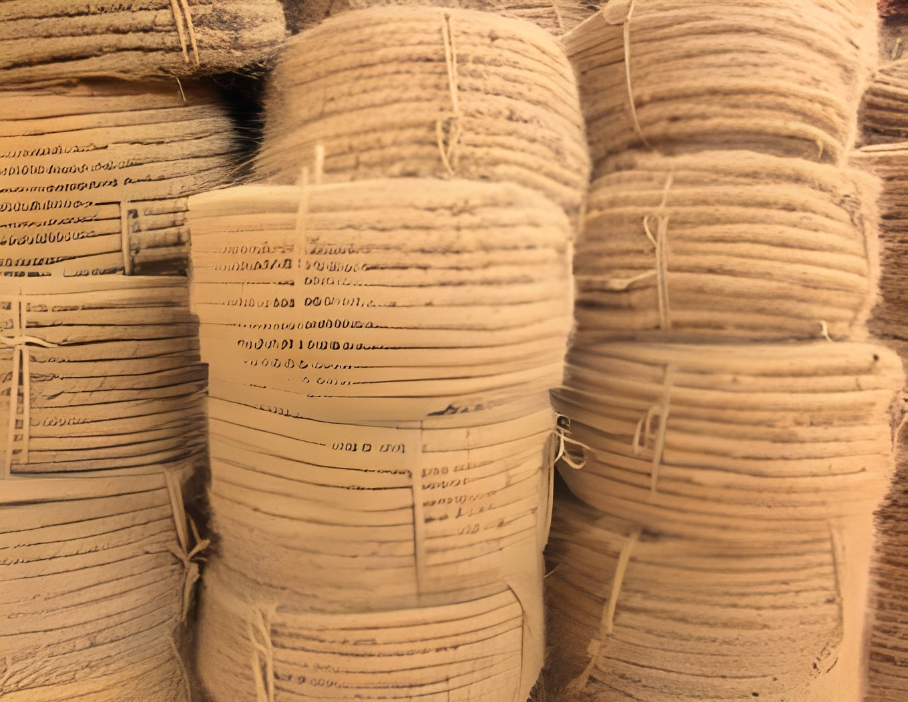

Premium coir products, specified for professional use.
Every grade below is produced from 100% natural coconut coir, sun-dried, quality-tested and packed for export. Dimensions, EC and packing can be customised to your crop and destination.
Coco Peat


Coco peat is a 100% natural growing medium made from coconut husk. Sun-dried and processed into compressed blocks and briquettes that expand on contact with water, it offers outstanding water-holding and aeration, resists bacterial and fungal growth, and releases nutrients to roots over long periods. Also known as coir pith, coir fibre pith or coir dust.
| Property | Blocks | Briquettes |
|---|---|---|
| Size | 30 × 30 × 12 cm ± 2 mm | 20 × 10 × 5 cm ± 2 mm |
| Weight | 5 kg ± 200 g | 650 g ± 50 g |
| Compression ratio | 5 : 1 | 5 : 1 |
| Electrical conductivity | 0.5 ms/cm | 0.5 ms/cm |
| pH | 5.2 – 6.8 | 5.2 – 6.8 |
| Expansion | 70 – 80 litres | 8 – 9 litres |
| Moisture | 10 – 15% | 10 – 15% |
| Load ability | 24 t / 40' HC | 24 t / 40' HC |
| Pallets / container | 20 pallets | 20 pallets |
| Pieces / pallet | 240 | 2000 |
| Drying & packing | Sun-dried · palletised, shrink film | Sun-dried · palletised, shrink film |
Coco Peat Grow Bags


Coco peat grow bags are plant substrates for soil-less cultivation, widely used in greenhouses for tomatoes, paprika, cucumber and strawberries, and in cut-flower production such as carnation, rose, lisianthus, gerbera and chrysanthemum. We tailor dimensions, expanded volume and physical structure to deliver the exact water and air-holding capacity your crop needs.
| Property | TCP 3MF | TCP 2.5MF | TCP 2MF |
|---|---|---|---|
| Compressed size | 1 × 0.15 × 0.04 m | 1 × 0.15 × 0.03 m | 1 × 0.15 × 0.02 m |
| Expanded size | 1 × 0.15 × 0.16 m | 1 × 0.15 × 0.14 m | 1 × 0.15 × 0.10 m |
| Unit weight | 3 kg approx. | 2.5 kg approx. | 2 kg approx. |
| Grow bags / pallet | 370 | 420 | 460 |
| Load ability (40' HC) | 7,400 bags | 9,240 bags | 10,120 bags |
| Material | 70% coco peat + 30% short fibre, or 100% coco peat |
|---|---|
| EC | < 1.0 (testing method 1:1.5) |
| pH | 6 – 7 |
| Compression | 5 : 1 |
| Packing | UV-treated (3-year) poly bag — inner black / outer white, or inner & outer black |
| Loading | 22 pallets in 40' HC, palletised & stretch-wrapped |
Coir Fibre


Our high-quality coir fibre is extracted from the inner surface of the coconut. Rich in lignin, it is strong yet elastic — it twists without breaking and holds a permanent curl, making it an excellent natural shock absorber. Used in furniture stuffing and upholstery, protective packaging, ropes and handicrafts. Available in brown and yellow grades.
| Property | Coir Fibre — Brown | Coir Fibre — Yellow |
|---|---|---|
| Moisture | up to 5% | up to 5% |
| Impurity | < 3% | < 7 – 9% |
| Length | 5 – 25 cm | 5 – 25 cm |
| Load ability | 20 t / 40' HC | 20 t / 40' HC |
| Bale weight | 115 – 125 kg | 115 – 125 kg |
| Packing | Plastic straps | Plastic straps |
Coir Husk Chips


Coir husk chips are cube-shaped pieces cut from dry coconut husk. They dramatically increase air porosity and water-holding capacity, offer excellent drainage and are naturally fungi-resistant. A proven medium for orchids, anthuriums, hydroponics, mulching and ground cover — absorbing up to 10 times their weight in water while retaining moisture.
| Size | 30 × 30 × 10 cm ± 2 mm |
|---|---|
| Weight | 5 kg ± 200 g |
| Compression ratio | 5 : 1 |
| EC (washed) | 0.5 ms/cm |
| pH | 5.8 – 6.8 |
| Expansion | 60 – 75 litres |
| Moisture | 10 – 15% |
| Load ability | 20 t / 40' HC · 20 pallets |
| Packing | Clear shrink wrap (single block or whole pallet) · sun-dried, palletised |
Twisted Coir Rope


Our twisted coir rope is processed from superior coir fibre and passes stringent quality checks. Strong, long-lasting and eco-friendly, with no harmful effect on the environment, it is supplied at competitive rates in 15, 20 and 25 mm diameters.
| Property | 15 mm | 20 mm | 25 mm |
|---|---|---|---|
| Colour | Brown / Golden brown | Brown | Brown |
| Moisture | < 15% | < 15% | < 15% |
| Impurity | < 10% | < 10% | < 10% |
| Fibre length | 100 – 200 mm | 50 – 200 mm | 50 – 200 mm |
| Curling | 23 curls / ft | 19 curls / ft | 17 curls / ft |
| Bundle weight | 26 kg | 26 kg | 26 kg |
| Bundle size | 2 × 2 × 2 ft | 2 × 2 × 2 ft | 2 × 2 × 2 ft |
| Load ability | 20 t / HC | 20 t / HC | 20 t / HC |
Tell us your specification — we'll match it.
Dimensions, expansion volume, fibre blend, EC, buffering and packing can all be tailored to your crop and destination port.